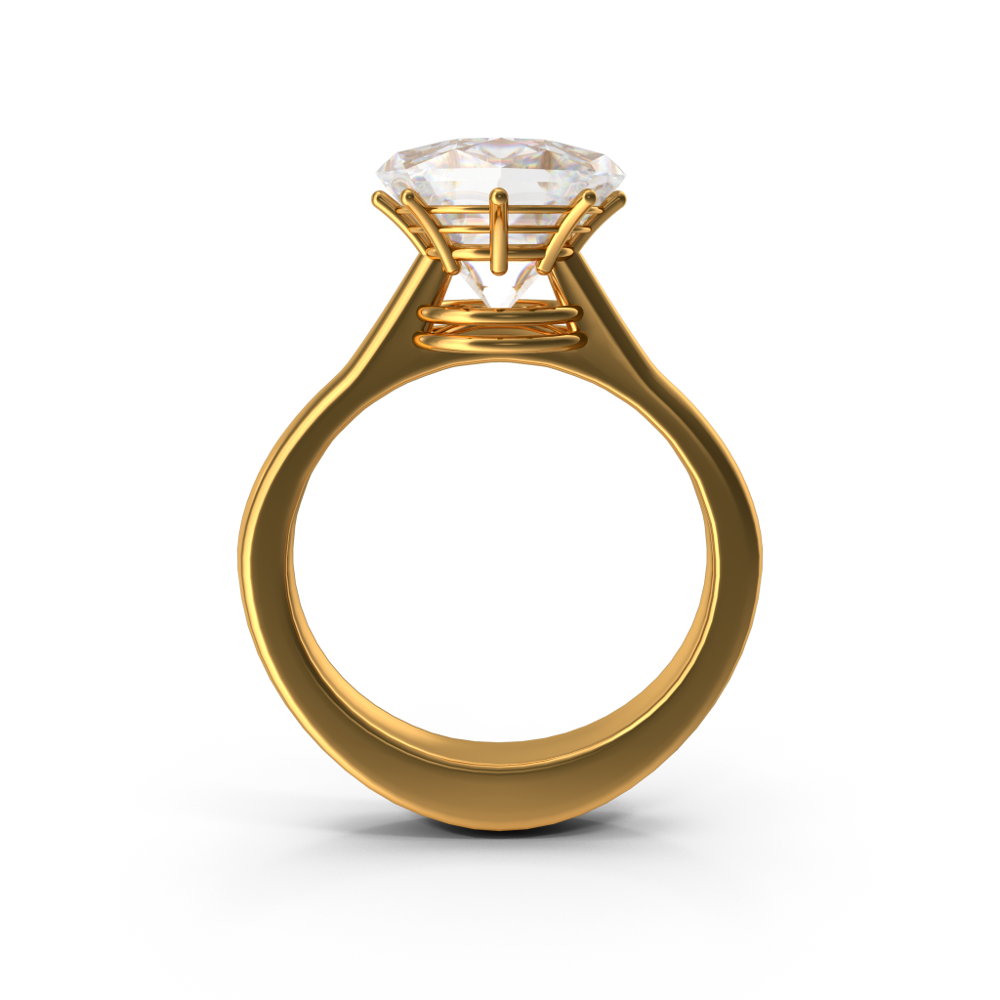
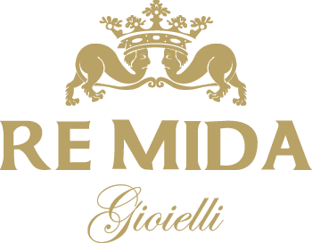
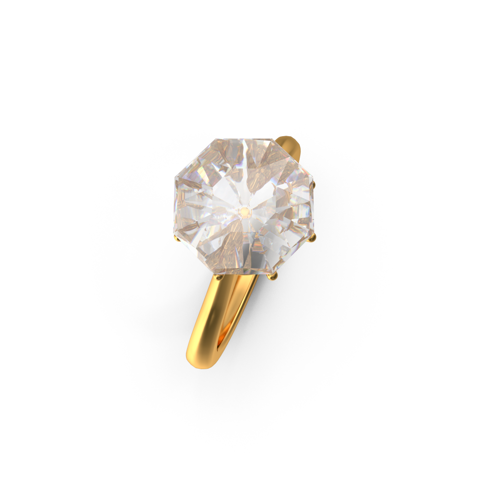
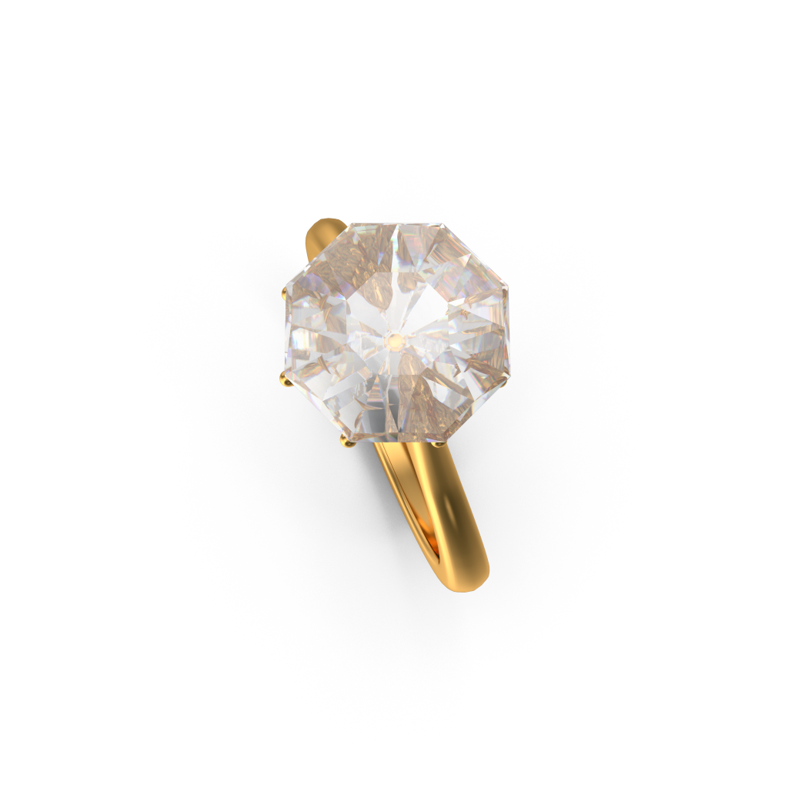
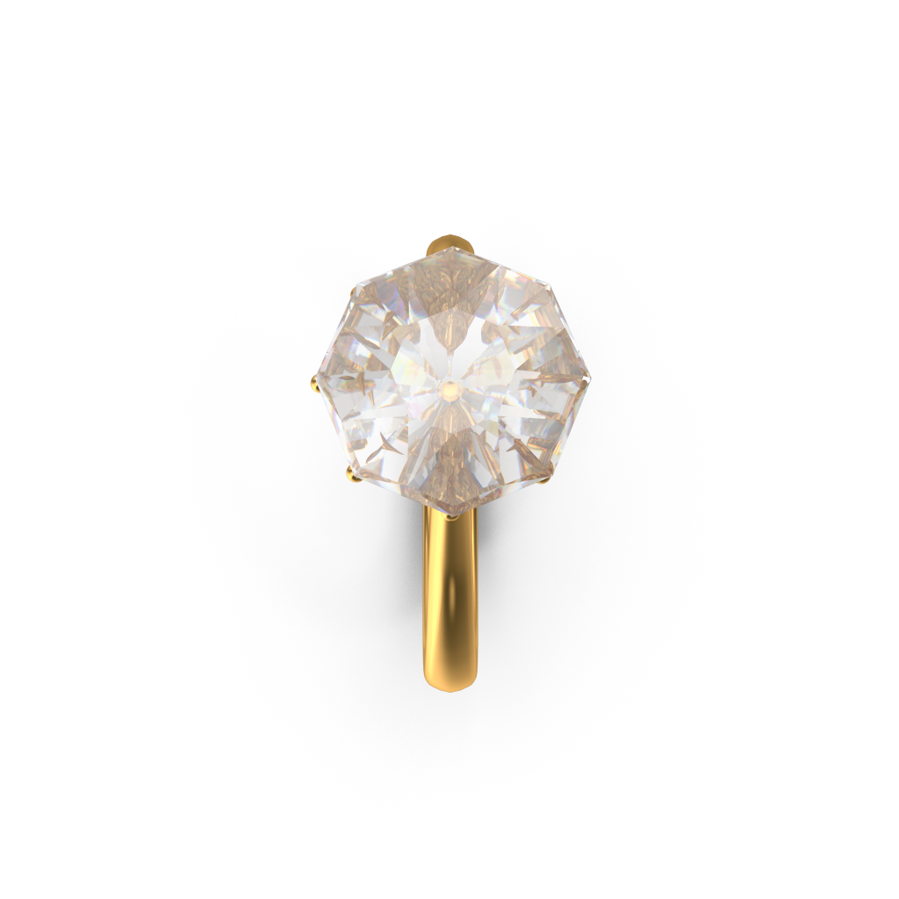

Un'esperienza immersiva 3D esclusiva. Esplora il labirinto di Re Mida Gioielli, scopri i diamanti cangianti e lasciati conquistare dalle nostre creazioni di alta gioielleria.

Bravo! You've discovered all the pieces of music. Read about the history of the labyrinth and its significance to the Maestro's output.
Select any section of the 15-hectare point-cloud estate layout to traverse and study its features.
A living representation of mathematical and spiritual geometry, cultivated from the Chartres and Reims cathedral floor designs. Inside this grand hedge maze, Krzysztof Penderecki placed four secret sonorous spaces containing acoustic recordings representing his artistic peaks.
"I spent forty years of my life creating a garden. It is like writing a symphony: you plant trees, arrange paths, wait for textures to develop. It is a work of patience and silence." — Krzysztof Penderecki
For Krzysztof Penderecki, the labyrinth was far more than an ornate garden novelty. It represented the core metaphor of his creative existence. In his view, art was never a straight line, nor was discovery a direct flight. He frequently remarked that a creator must "wander and roam," exploring dead ends, complex structures, and dissonant alleys.
"Only a roundabout way may lead to fulfillment," he wrote. To stand inside the green, towering yew hedges in his estate was to experience physically what his listeners experienced aurally inside his complex, multi-layered, and textural symphonic scores.
The physical labyrinth in Lusławice was planted following a meticulous geometric plan. Penderecki drew deep inspiration from history, researching the mystical floor designs of 13th-century French gothic cathedrals. Specifically, the layout combines details of the labyrinths from the Reims and Chartres cathedrals.
Instead of encouraging panic or frustration, this layout is unicursal—a single winding path leading inexorably to the center and out again. It is designed to inspire meditation, calm reflection, and complete immersion in nature and silence.
The labyrinth consists of thousands of painstakingly manicured hedges and trees. Click on any species below to explore its botanical details and listen to the ambient rustle of its foliage recorded directly in the Lusławice estate.
The backbone of the labyrinth hedges. Yew is legendary for its long life, carrying mythological links to eternity, rebirth, and silence. Its dense, deep dark evergreen needles form the impenetrable green walls of the labyrinth, absorbing noise and providing the perfect acoustic canvas.




Un'esclusiva creazione orafa ispirata alla geometria sacra del labirinto. Realizzato in oro massiccio 18 carati con finitura satinata a mano, monta un diamante purissimo a taglio brillante da 1.2 carati che cattura la luce riflettendo sfumature cangianti ad ogni passo nel labirinto.